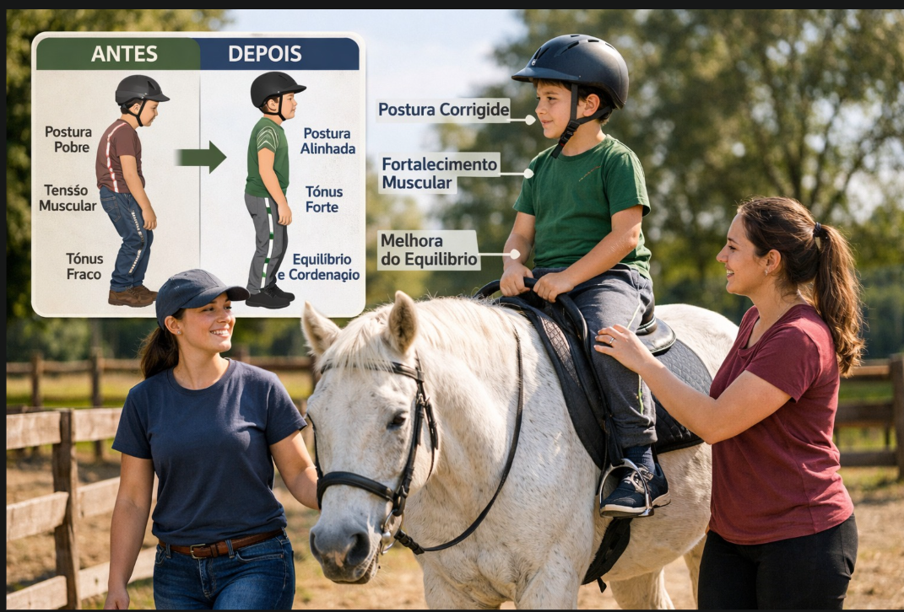
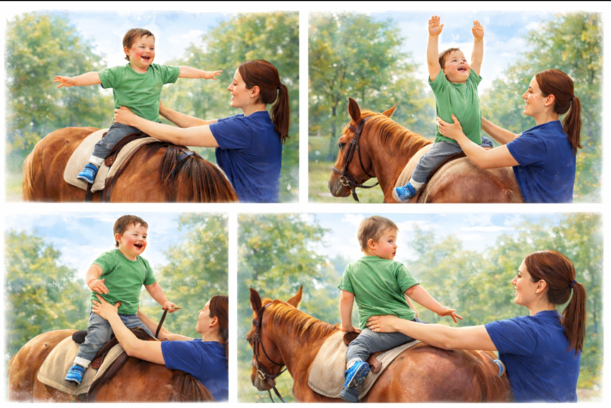

A ecoterapia, também conhecida como equoterapia, é uma abordagem terapêutica que utiliza o movimento do cavalo para estimular o corpo e o cérebro. Esse método tem mostrado resultados importantes no desenvolvimento de crianças com Síndrome de Down.
O principal benefício vem do movimento tridimensional do cavalo — para frente e para trás, de um lado para o outro e para cima e para baixo — que é muito parecido com a marcha humana. Isso ajuda o cérebro a “aprender” padrões corretos de movimento e melhora a coordenação.

Durante a prática, o corpo da criança precisa fazer ajustes constantes para manter o equilíbrio. Esses pequenos ajustes ativam músculos importantes, especialmente os do tronco (core), ajudando a melhorar a postura, o controle corporal e a estabilidade.
Além dos ganhos físicos, a ecoterapia também estimula o sistema nervoso. O contato com o cavalo e o ambiente ao ar livre ativa diferentes sentidos ao mesmo tempo, favorecendo a neuroplasticidade — ou seja, a capacidade do cérebro de se adaptar e aprender.

Outro ponto importante é o impacto emocional. A interação com o animal promove bem-estar, reduz a ansiedade e aumenta a autoestima, tornando a terapia mais leve e motivadora.
Para crianças com Síndrome de Down, que costumam apresentar hipotonia (fraqueza muscular) e dificuldade de equilíbrio, a ecoterapia pode contribuir significativamente para o ganho de força, coordenação e independência nas atividades do dia a dia.
Este conteúdo foi produzido por acadêmicos de Fisioterapia com o apoio de imagens e vídeos gerados por inteligência artificial, utilizados para enriquecer a experiência visual e transmitir a mensagem com mais sensibilidade.
Esse texto é apenas para fins informativos. Para orientação ou diagnóstico médico, consulte um profissional.
Referências:
- ● RAMOS, M. M.; PARISI, M. T.; NABEIRO, M. Crianças com Síndrome de Down e Terapia Assistida por Equinos: uma revisão sistemática. Revista Brasileira de Ciência e Movimento (RBCM), v. 31, n. 1, 2023.
- ● KAYA, Y.; SAKA, S.; TUNCER, D. Effect of hippotherapy on balance, functional mobility, and functional independence in children with Down syndrome: randomized controlled trial. European Journal of Pediatrics, v. 182, p. 3147–3155, 2023.
- ● SIDDIQUI, M. et al. Effects of Simulated Equestrian Therapy in Improving Motor Proficiency among Down Syndrome Children - A Randomized Controlled Trial. International Journal of Exercise Science, v. 17, n. 1, p. 1193-1207, 2024.